Depas Kora — Departamentos eco-luxury próximamente en Puerto Ángel, Oaxaca
Puerto Ángel · Oaxaca · Próximamente
Departamentos frente al mar
Uno de los proyectos de departamentos más innovadores de la Costa de Oaxaca, en Puerto Ángel, con vistas al mar y rodeado de naturaleza.
Diseño minimalista y vida contemporánea. Próximamente — déjanos tus datos y serás de los primeros en conocerlo.
Las imágenes son renders de inspiración del diseño que tendrán los departamentos.


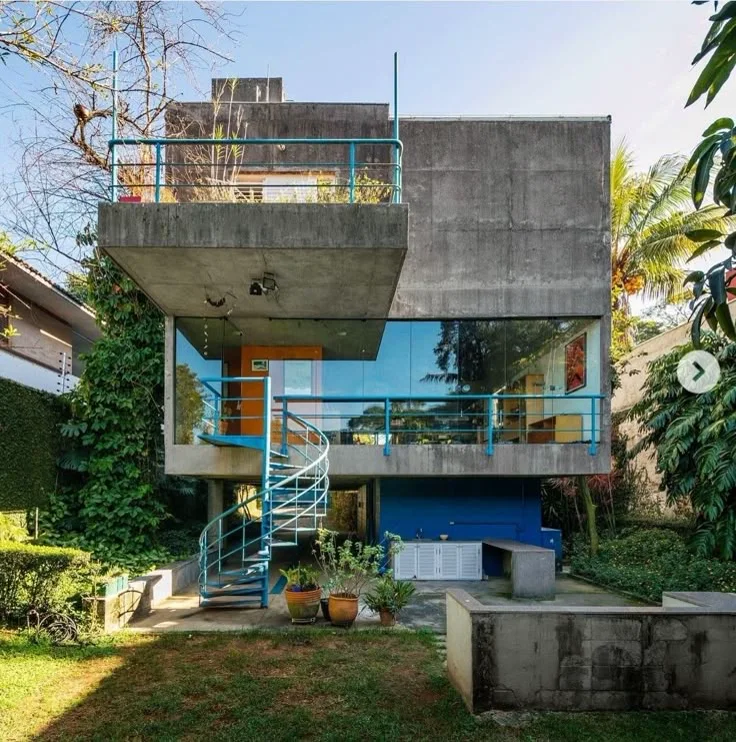
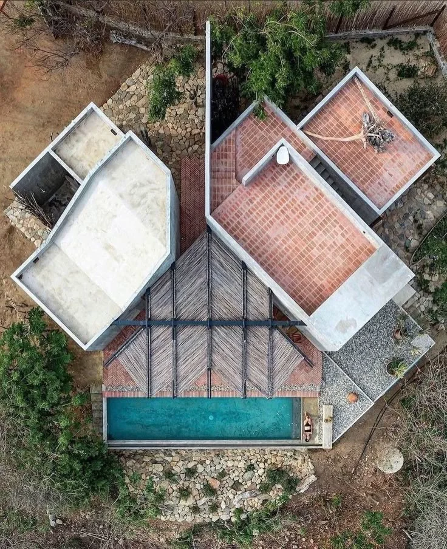
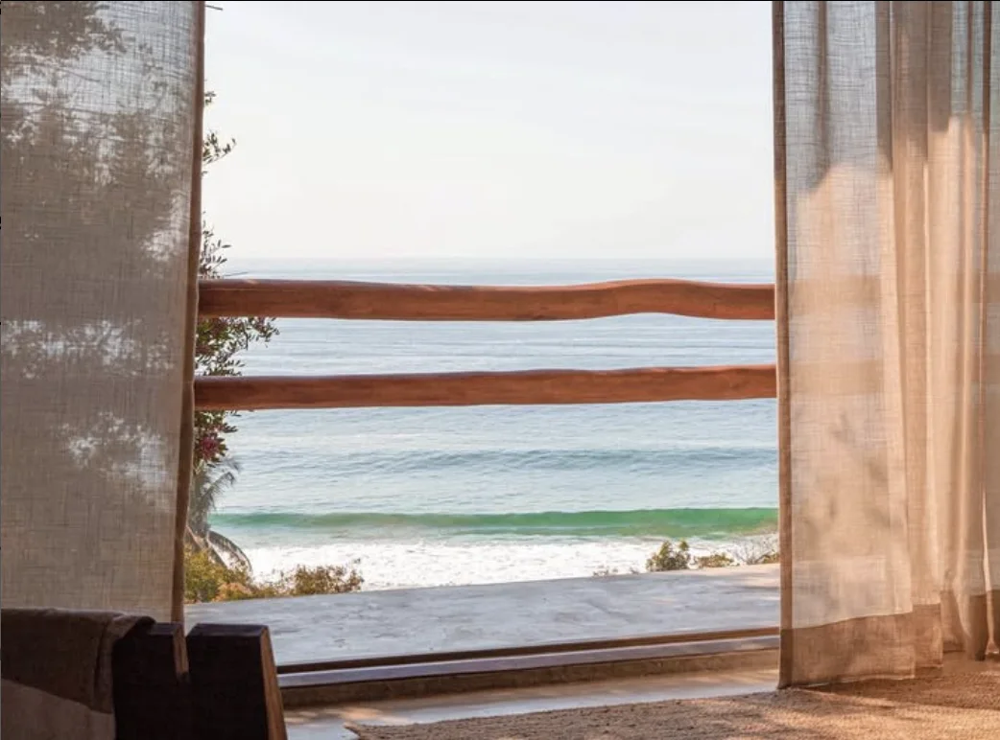
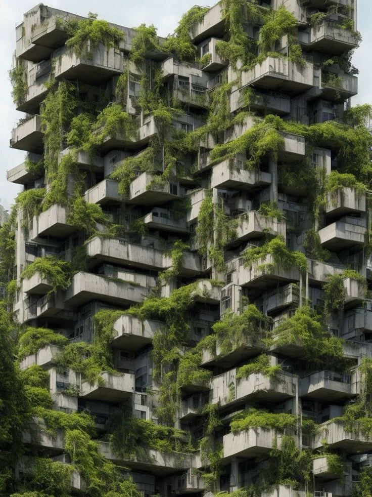
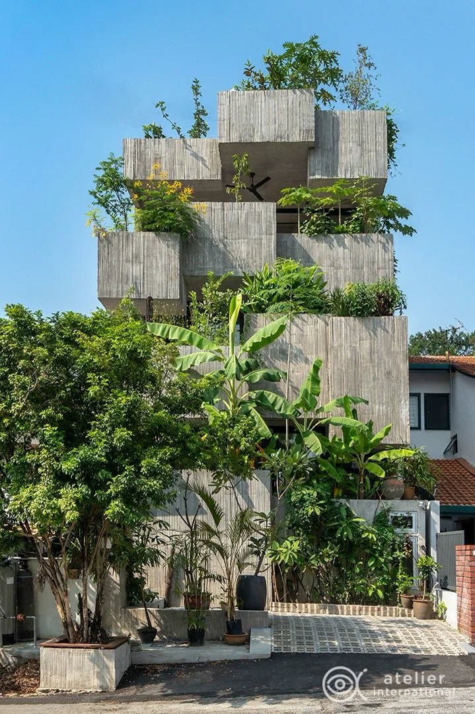
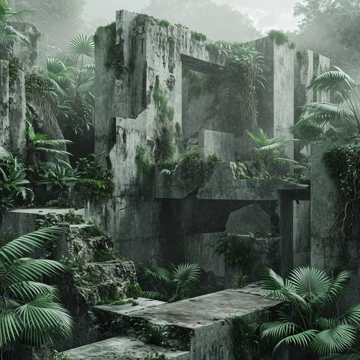
Concreto aparente, terracota, piedra local, carrizo y madera: la paleta con la que Kora dialoga con Zipolite.
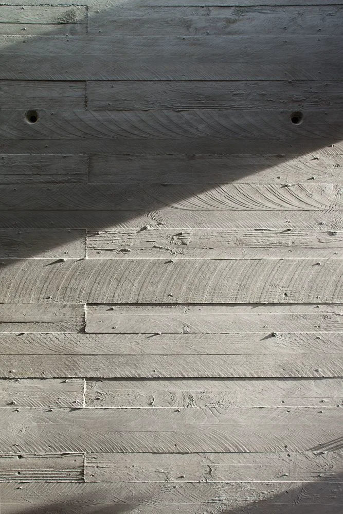
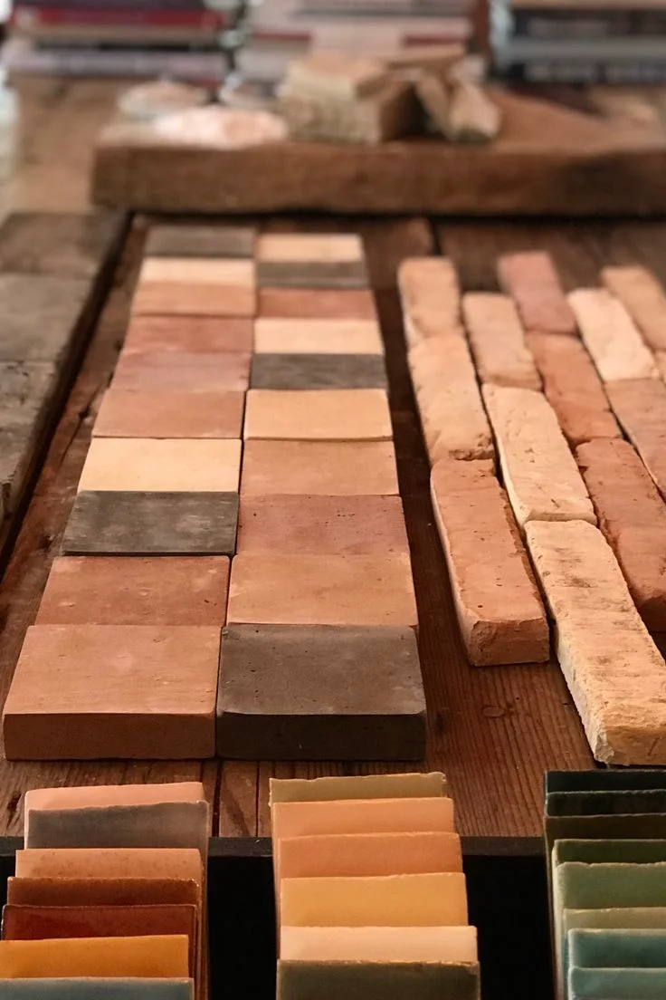
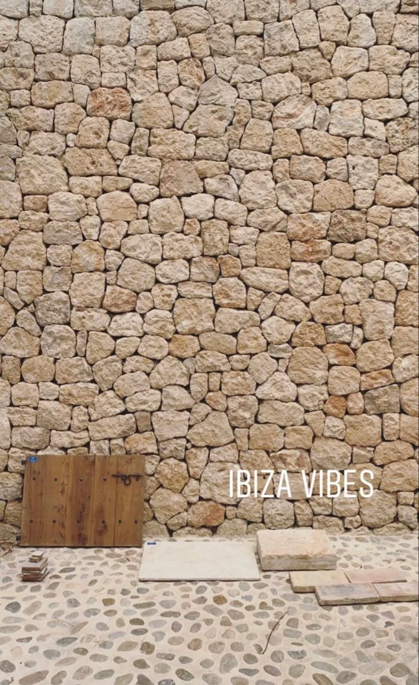
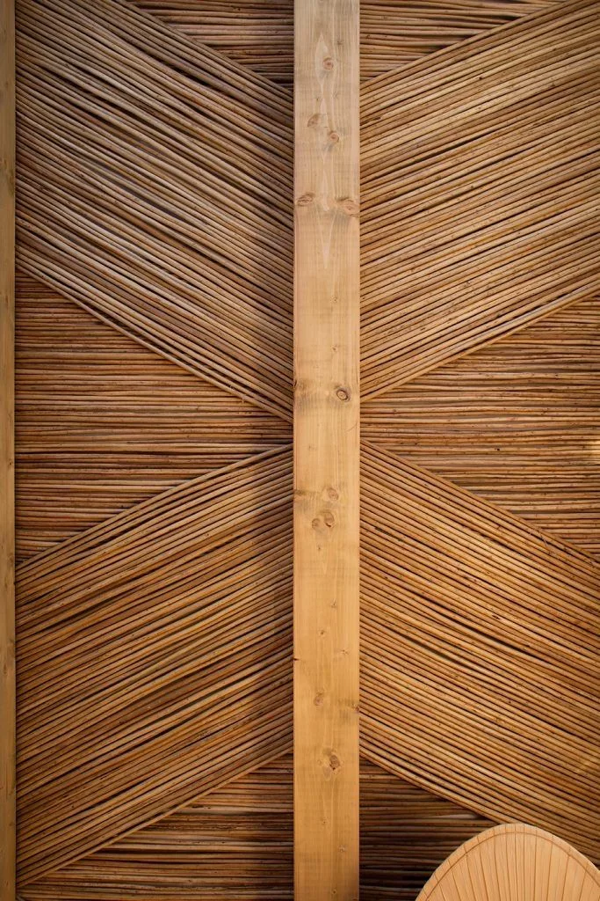
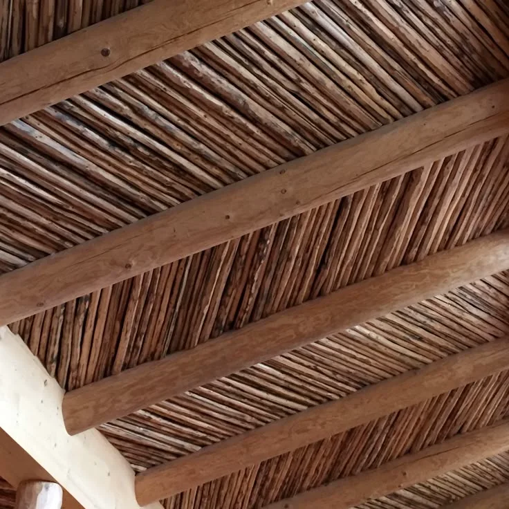
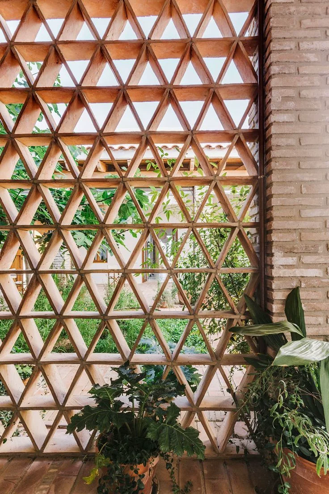
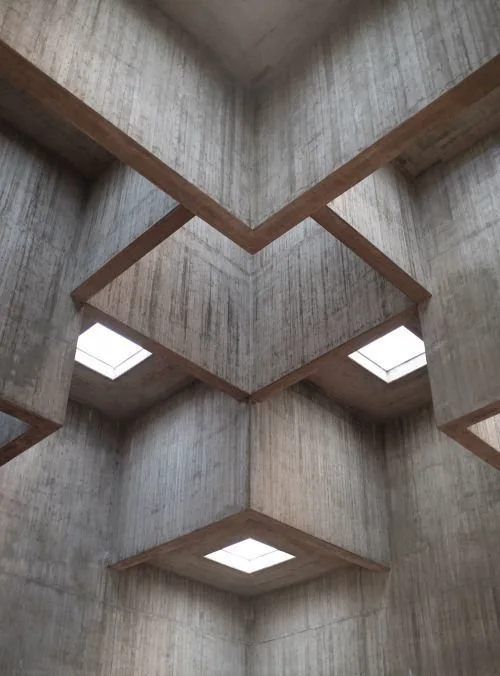
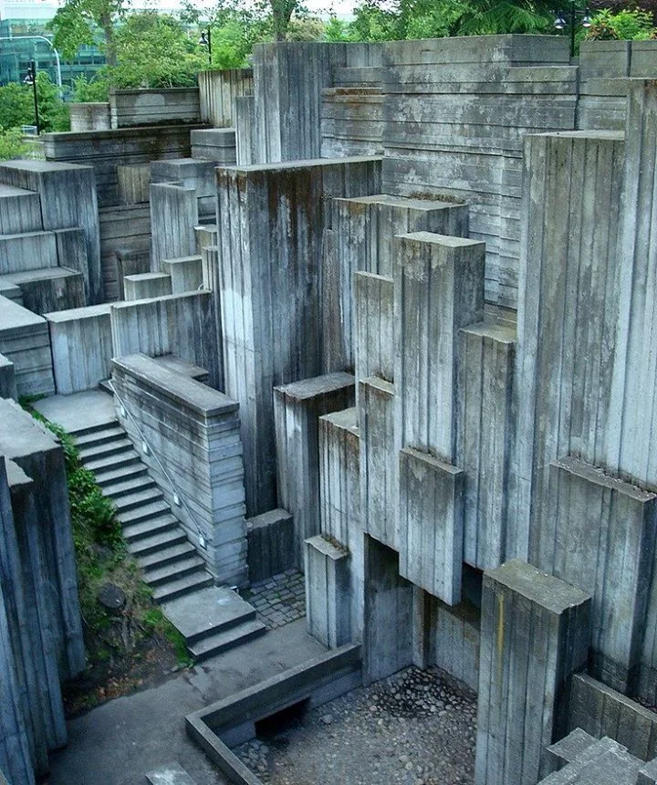
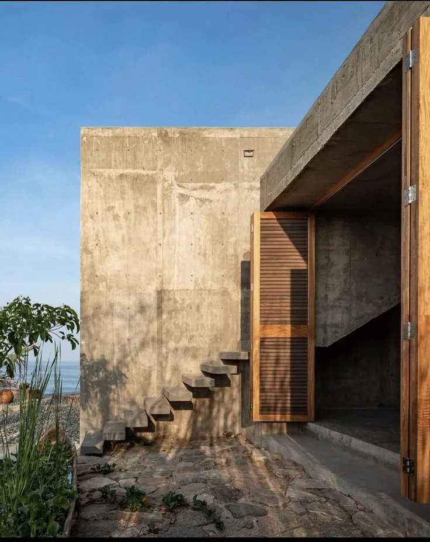
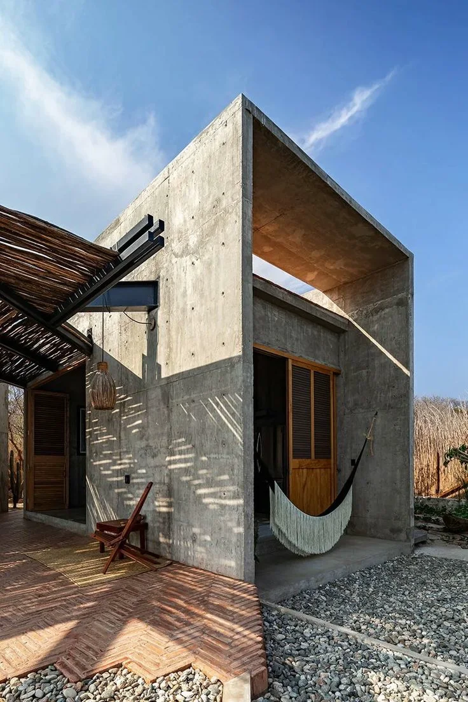
Departamento de diseño minimalista, listo para vivir o rentar sin construir nada.
La bahía, el muelle y las playas a minutos de tu puerta.
El formato más simple para invertir en la costa y generar renta desde el día uno.
Diseño minimalista de autor en Puerto Ángel. Especificaciones, avances y fechas de entrega te las comparte un asesor.
Están en preventa: precio preferente por entrar temprano. Un asesor te confirma disponibilidad y condiciones vigentes.
Sí, hay esquemas de enganche y mensualidades flexibles. Las condiciones exactas dependen del lote — un asesor te las confirma por WhatsApp.
Sí. Todos nuestros proyectos incluyen acompañamiento legal completo y título de posesión en regla. Antes de firmar te explicamos cada documento, sin letra chica.
Déjanos tu correo y serás de los primeros en conocer la disponibilidad de Depas Kora.